云图，观测资料类网站
返回上一页面
云图，观测资料等
部分网站打开时间可能较长，如遇链接失效，请立即发送邮件通知我，感激不尽！
中央气象台
T639,降水预报，台风路径预报等等，东西还是很多的
点我前往~~
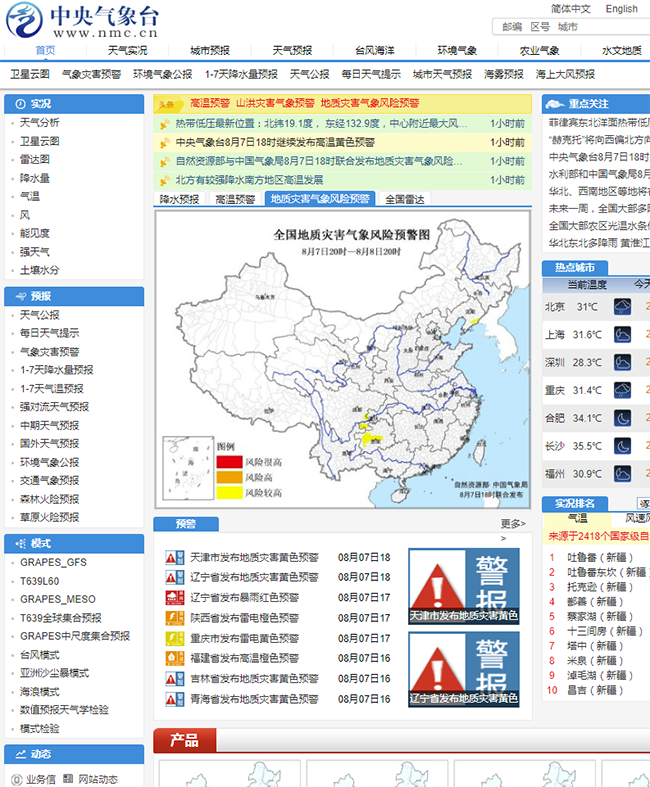
国家气候中心
下载园地中有很多有价值的数据
点我前往~~
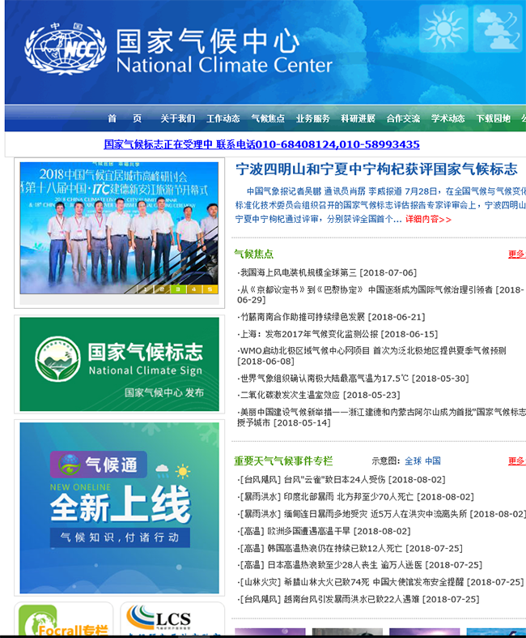
国家气象卫星中心
可以了解风云系列卫星在轨情况和下载相关数据
注意：此网站打开时间较长
点我前往~~
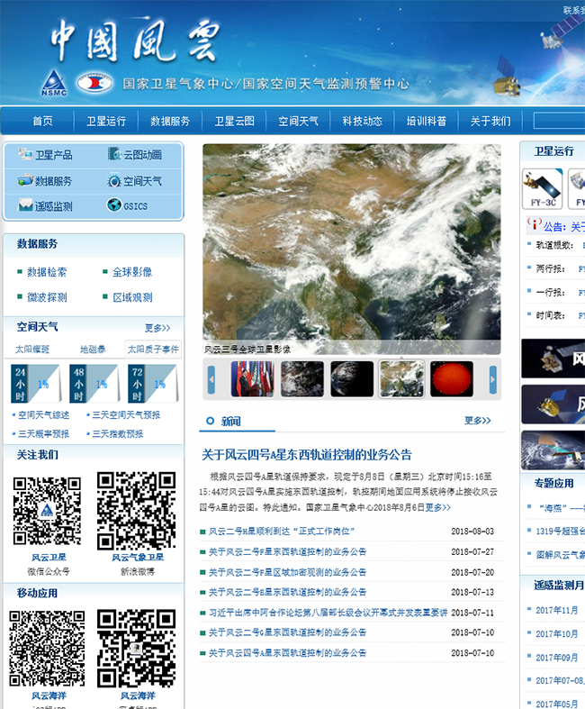
国家气象信息中心
可以下载探空数据等
点我前往~~
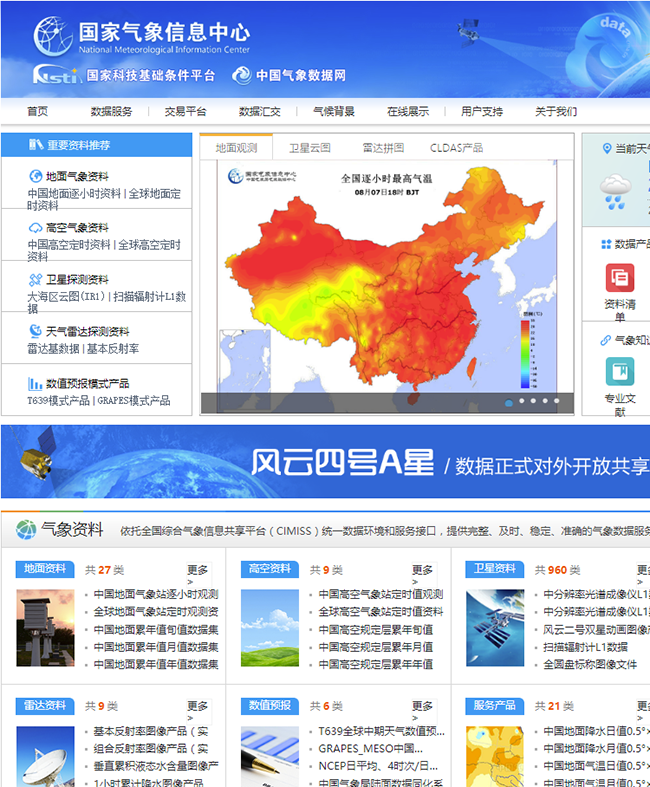
Regional and Mesoscale Meteorology Branch（RAMMB）
对每一个扰动和气旋都有相应的卫星观测资料
点我前往~~
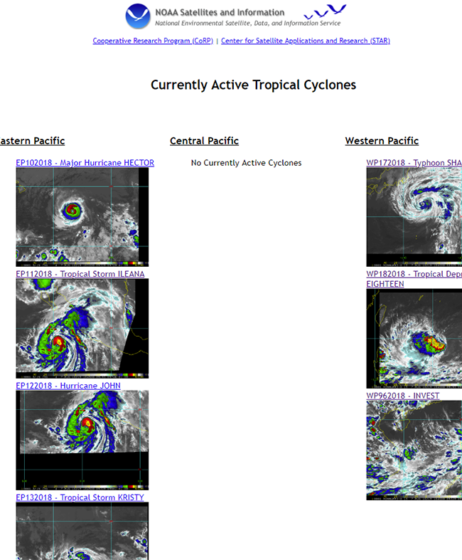
向日葵8号可见光云图
图像质量极高，也可查看历史图像数据
注意：此网站打开时间较长
点我前往~~
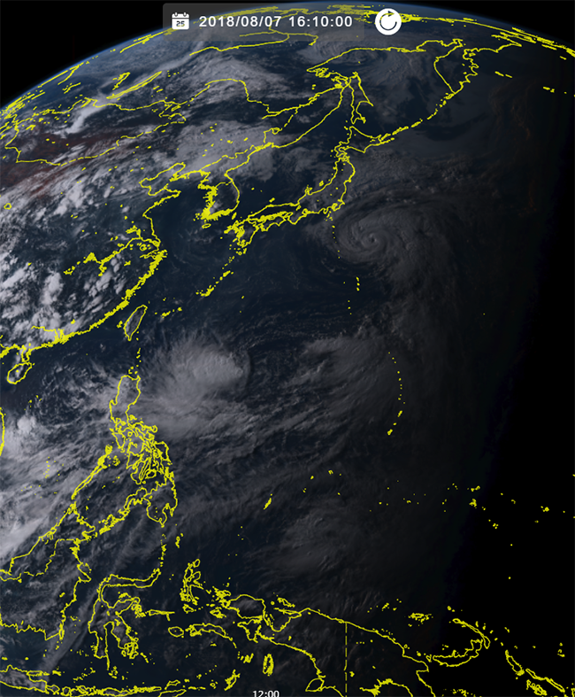
风场扫描
对于评估初期扰动强度非常有帮助
点我前往~~
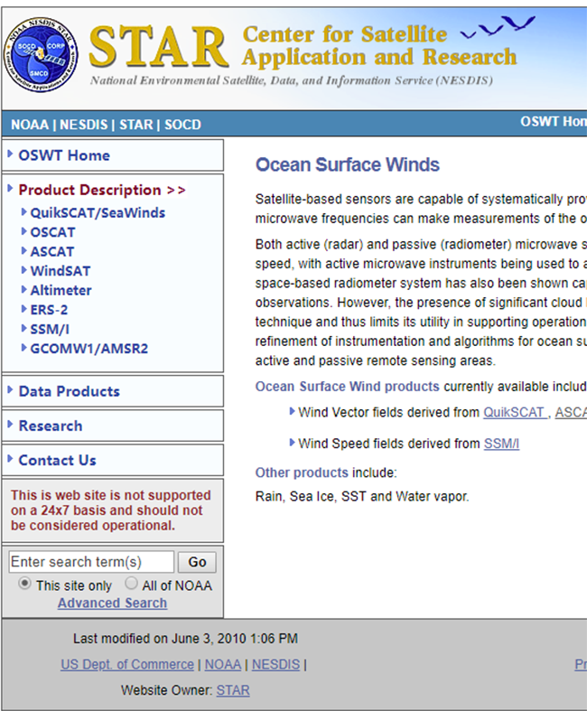
温州台风网
用于查询西北太平洋历史台风信息
点我前往~~
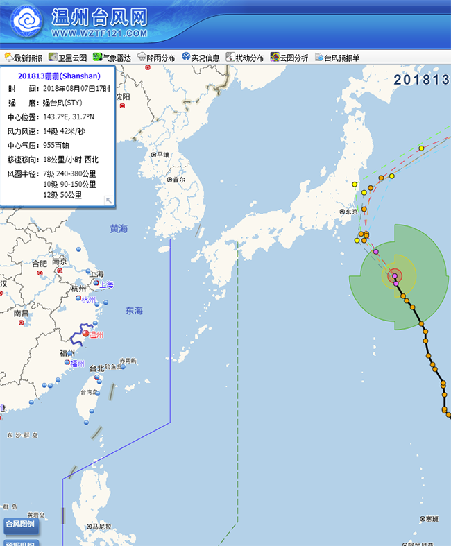
デジタル台風：日時・シーズンで検索
用于查询全球台风历史数据
点我前往~~
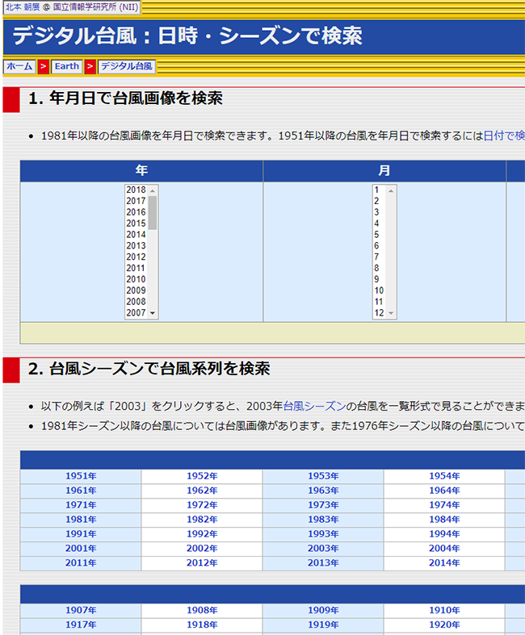
航空气象综合服务平台
侧重航空专业的气象数据
点我前往~~
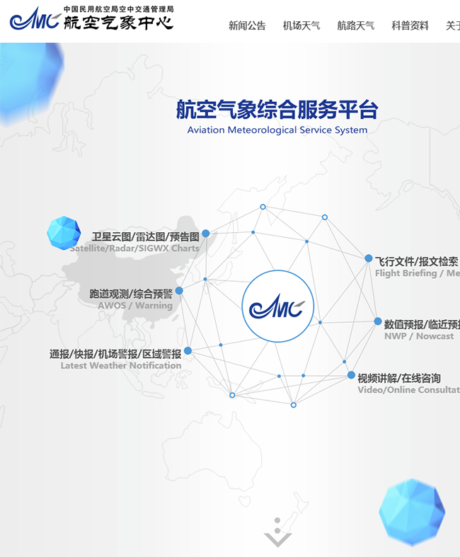
Global Tropical Cyclone Tracks
全球热带扰动实时发布
点我前往~~
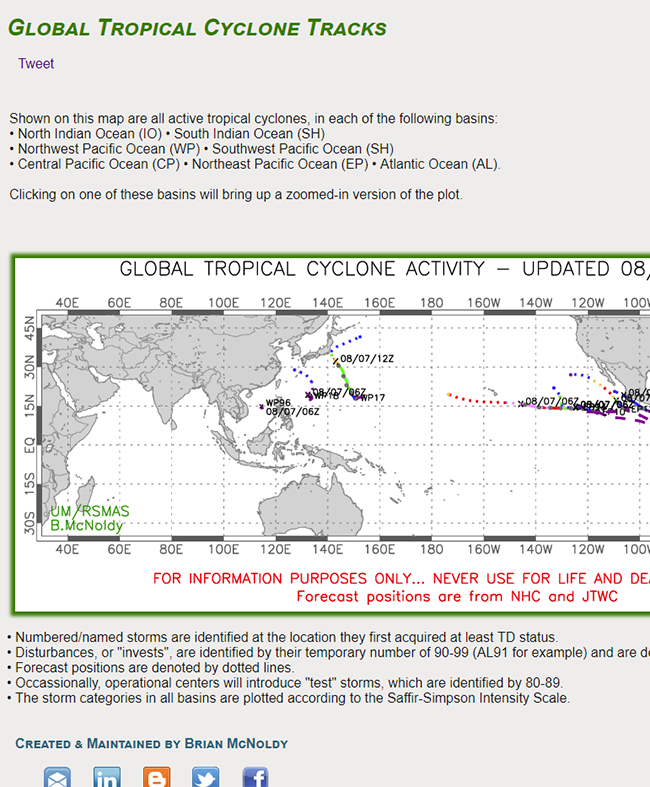
Earth Observatory
NASA地球观测站
点我前往~~
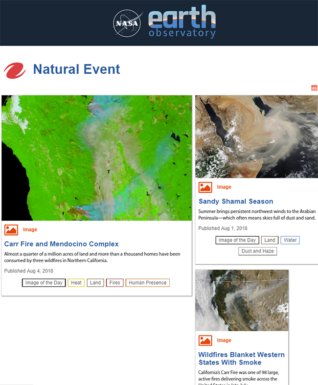